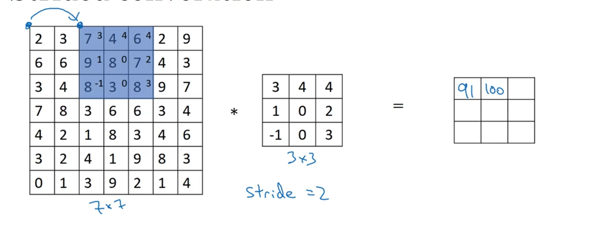
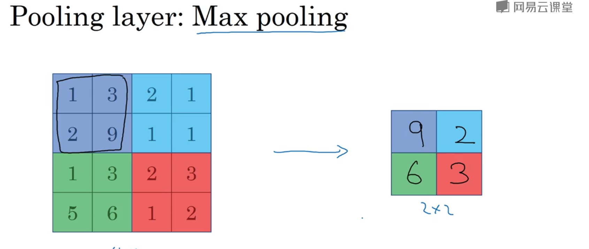
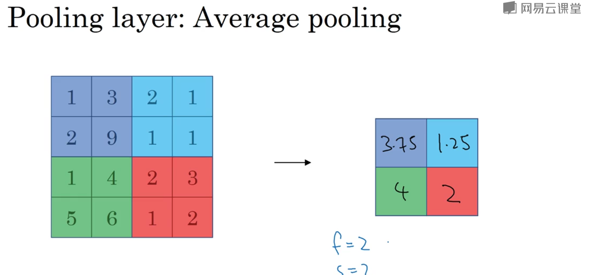

卷积神经网络的层级结构
• 数据输入层/ Input layer
• 卷积层/ CONV layer
• ReLU激励层 / ReLU layer
• 池化层 / Pooling layer
• 全连接层 / FC layer
Input layer
主要对输入的数据进行预处理，包括：
- 去均值化：对每个数据减去整体的均值。
- 归一化：常用的归一化策略有BN(Batch Normalization)， WN(Weight Normalization)， LN(Layer Normalization)， IN(Instance Normalization)。
- PCA/白化(Whitening)：用PCA降维；白化是对数据各个特征轴上的幅度归一化。
卷积层
卷积神经网路中每层卷积层由若干卷积单元组成，每个卷积单元的参数都是通过反向传播算法优化得到的。卷积运算的目的是提取输入的不同特征，第一层卷积层可能只能提取一些低级的特征如边缘、线条和角等层级，更多层的网络能从低级特征中迭代提取更复杂的特征。
由于图片类的数据维度较高，如果像神经网络一样使用全连接(Full Connected)的设定，所需要计算的量会变得非常大。使用卷积层来解决这种问题的方法是对隐含单元和输入单元间的连接加以限制
介绍几个卷积层中特定名词：
- 深度depth：有多少filter(可看作神经元)，深度就是几
- 步长stride:窗口每次滑动的距离
- 填充zero-padding：当最后剩余的像素不够滑动窗口的大小时，需要在最外层补0，就是填充。
- 接受域receptive field：决定某一层输出结果中一个元素所对应的输入层的区域大小。（大白话就是这一层一个像素对应上一层像素的大小）
卷积层的计算就是内积：接受域与filter对应项相乘再求和。

权值共享：每个神经元连接数据窗的权重是固定的。简单的说就是每个filter是不变的，每个filter会与每一个接受域进行卷积运算。
ReLU层
CNN使用修正线性单元ReLU作为激活函数，对原输入数据进行非线性映射。因为ReLU收敛快，求梯度简单。
池化层
池化层夹在连续的卷积层中间， 用于压缩数据和参数的量，减小过拟合。简单来说，如果输入是图像的话，那么池化层的最主要作用就是压缩图像。
池化层主要的作用是：
- 对图像进行resize
- 特征降维
- 防止过拟合
池化层的方法有：
- Max pooling
- average pooling


全连接层
就是神经网络中的层间全连接
总结
对于输入的数据大小为$n \times n$,假设filter大小为$f^{[l]}$,padding大小为$p^{[l]}$,stride大小为$s^{[l]}$,那么输出的数据大小为：
$$n^{[l]}=\left\lfloor{\frac{n^{[l-1]}+2p^{[l]}-f^{[l]} }{s^{[l]} } }\right\rfloor$$
常见的卷积神经网络架构是这样的：
1 | INPUT -> [[CONV -> RELU]*N -> POOL?]*M -> [FC -> RELU]*K -> FC |
CNN的优缺点：
优点
- 共享卷积核，对高维数据处理无压力
- 无需手动选取特征，训练好权重，即得特征分类效果好
缺点 - 需要调参，需要大样本量，训练最好要GPU
- 物理含义不明确（也就说，我们并不知道没个卷积层到底提取到的是什么特征，而且神经网络本身就是一种难以解释的“黑箱模型”）
stride为什么取很小？
取很小的情况下，接受域彼此重叠，可以使卷积后的图像更加平滑。